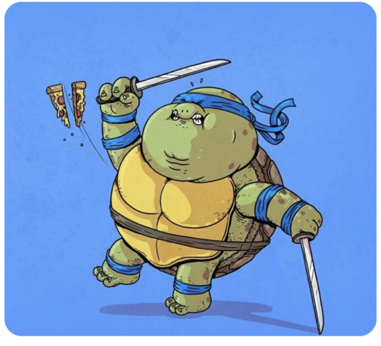
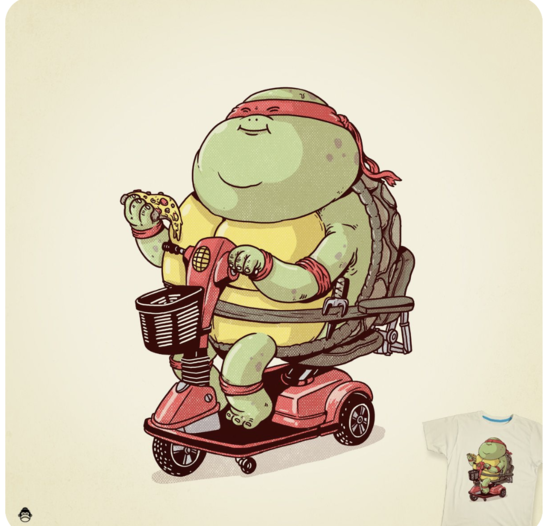
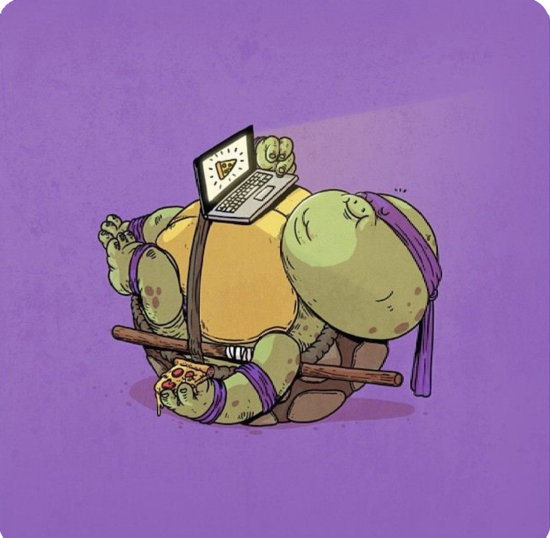
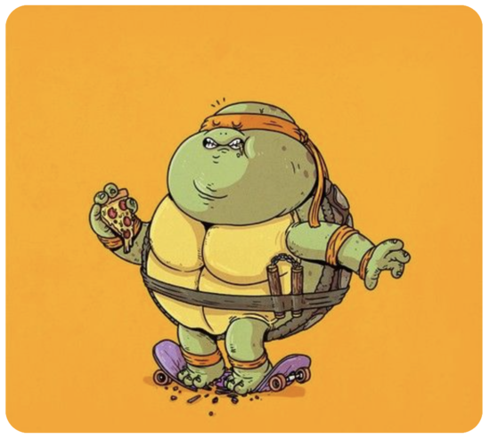

История персонажа
Черепашки-ниндзя — персонажи популярной серии комиксов, а также герои мультфильмов, фильмов и компьютерных игр. Став результатом мутации, черепашки получили суперспособности. Каждый из героев наделен неповторимым характером, имеет свое особое оружие. Эффектные сражения со злодеями, а также юмор сделали персонажей любимцами публики, настоящими легендами.
История создания персонажей
Авторами комиксов о необычных героях стали иллюстраторы Кевин Истмен и Питер Лэрд. Зимой 1983 года художники нарисовали первых героев будущего культового проекта. По задумке, черепахи-мутанты пародировали четыре комикса — New Mutants и «Сорвиголова» от «Марвел», приключения самурая Ronin, придуманные иллюстратором Фрэнком Миллером, и историю о трубкозубе «Серебас», которую написал Дэйв Сим. Оригинальность идеи состояла в том, что героями, мастерски владеющими восточными единоборствами, стали черепахи, которые в традиционном представлении далеки от образов ниндзя.
Комиксы рассказывают о приключениях четырех черепашек, которых зовут Микеланджело, Донателло, Леонардо и Рафаэль. Имена позаимствованы у великих мастеров эпохи Возрождения. В одном из интервью Кевин Истмен признался, что он и Лэрд не хотели называть черепах японскими именами, потому что думали, что для американского читателя это будет слишком чуждо. Поэтому иллюстраторы решили пойти в противоположном направлении и подобрать характерные европейские, связанные с историей искусства
Сначала персонажи были черно-белыми, единственное яркое пятно — красные повязки на глазах. Цвет указывал на видовую принадлежность рептилий, срисованных с красноухой черепахи. Но когда эти жители канализации завоевали признание у читателей, авторы подарили главным героям разноцветные повязки. К весне 1984 года готовая серия комиксов отправилась в печать. Похождения необычных рептилий публика оценила по достоинству. В 1988 году в комиксах появился новый персонаж — Крысиный король, созданный художником Джимом Лоунсоном.
Образы и характеры ниндзя-черепашек
Авторы создали команду, где персонажи дополняют друг друга. Получился микс из непосредственности, юмора, ума и силы. Так, Леонардо — лидер отряда. Главные черты героя — справедливость и рассудительность. Но умение трезво смотреть на вещи делает персонажа занудой в глазах других. Он смело бросается грудью на амбразуру, верный товарищ, чтит правила чести. Выделяется из команды повязкой синего цвета, а его оружие — два меча-катаны.
Рафаэль — противоположность Леонардо. Подозрительный и вспыльчивый воин не стесняется проявлять агрессию. Иногда проявляет чрезмерную самостоятельность и инициативу, что часто приводит к серьезным проблемам. Позднее мультипликаторы добавили в образ черты задумчивого философа. Рафаэль носит красную повязку и пару острых кинжалов-сай.
Донателло предстает ученым-любителем, мозгом черепашьего отряда. Мускулистый ботаник-ниндзя в фиолетовой повязке обеспечивает команду дирижаблем, компьютером и технологичным фургоном. Научные опыты не обходятся без плачевных последствий: вокруг этого героя все горит, взрывается, случаются катастрофы. Персонаж выбирает исключительно мирные пути решения конфликтов, хотя все же приходится применять силу. В арсенале Донателло шест-бо — длинный деревянный посох.
Микеланджело заражает весельем и беззаботностью. Добряк обожает совмещать поедание пиццы с видеоиграми, любит комиксы, катается на скейте.Героя напрягают тренировки, он с удовольствием променяет погони на крышах на мирные часы у телевизора. Персонажа украшает оранжевая повязка, а из оружия воин использует нунчаки.
